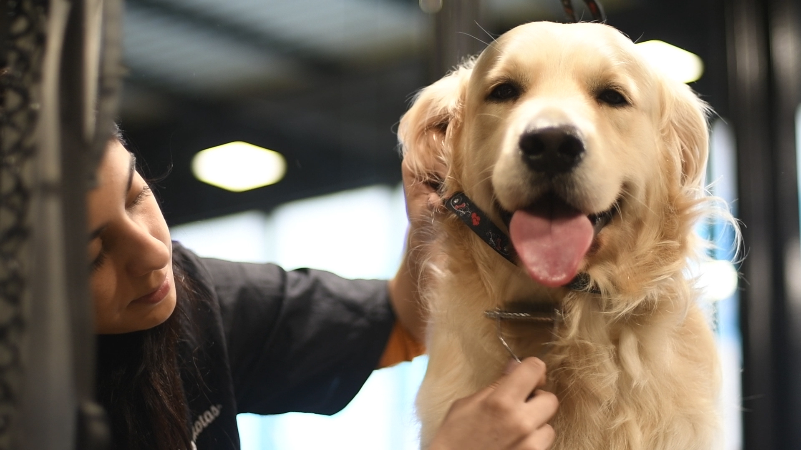
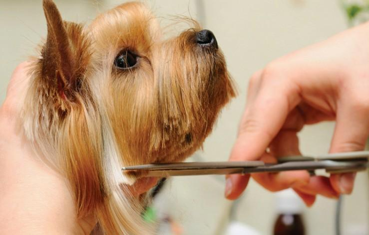
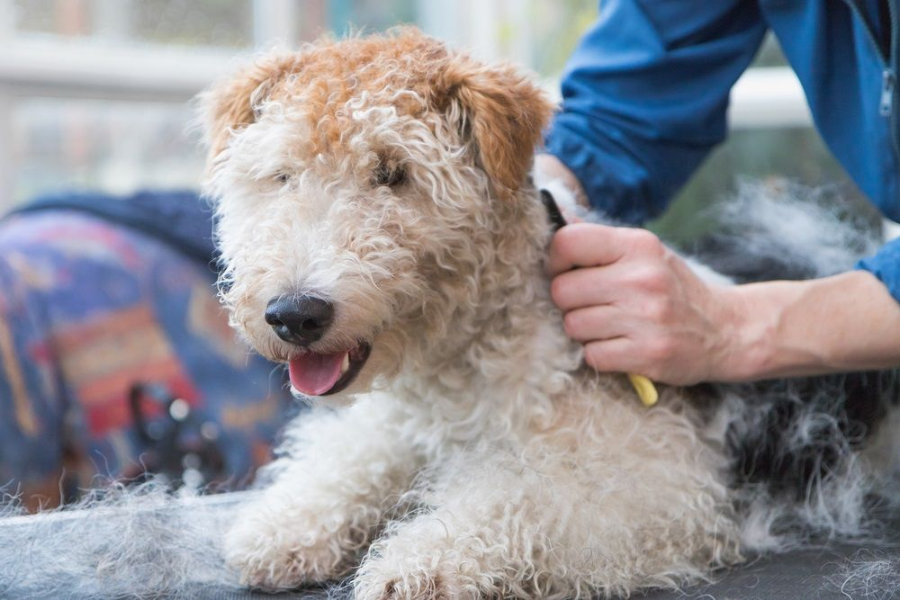
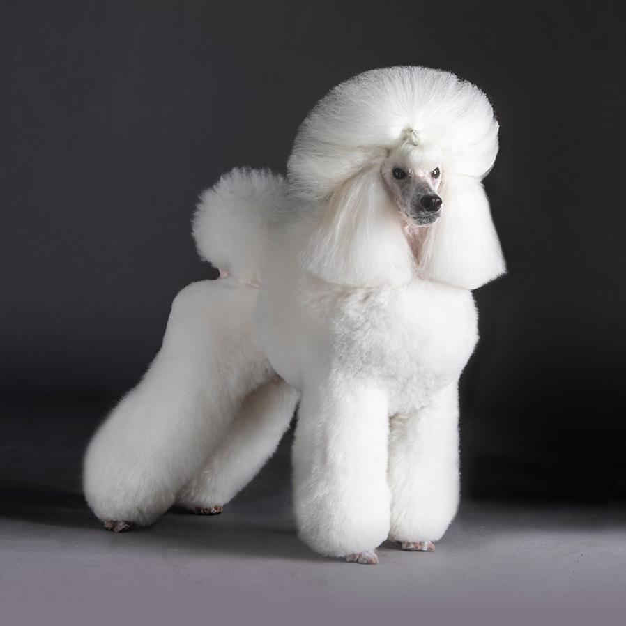
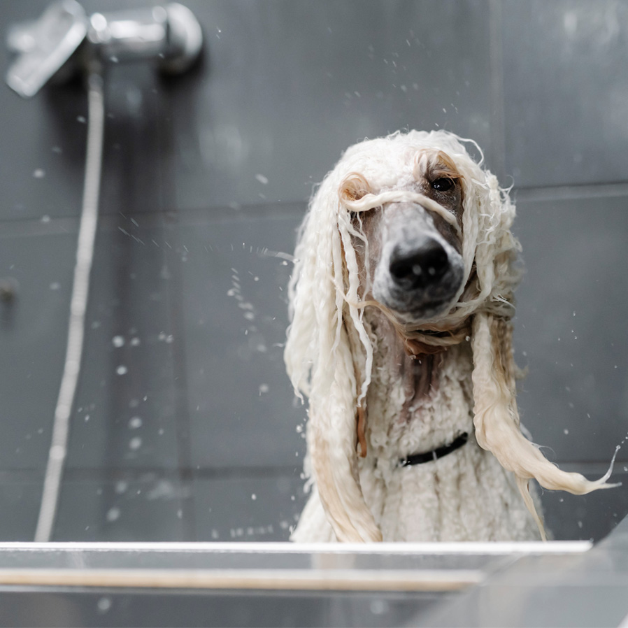
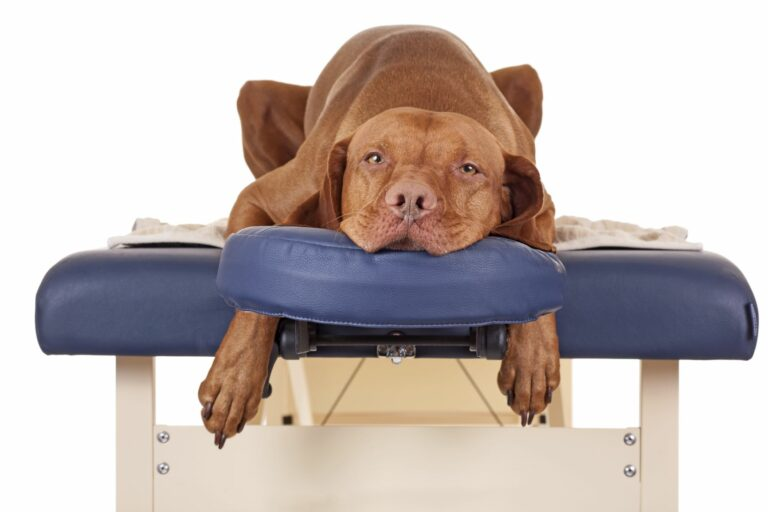
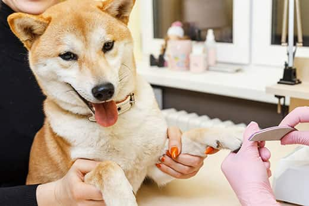
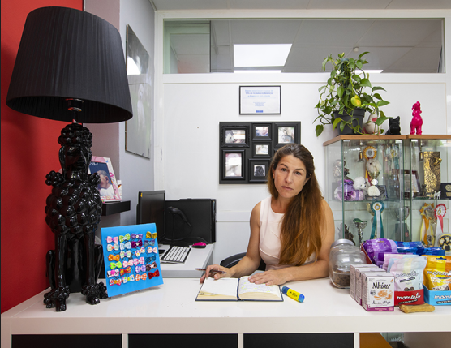
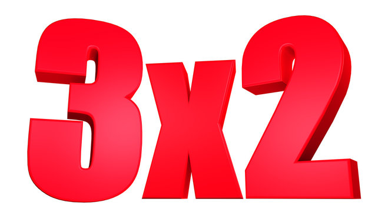

Peluquería Canina Servicios
Peluquería Canina Servicios
Cortes de Pelo
Corte a tijeras

La técnica idónea para arreglar mantos largos, lisos, ondulados y rizados, es el Corte
a Tijera.
Puede usarse tanto en perros de raza, como en mestizos, cuya textura permita realizarles arreglos,
utilizando esta herramienta.
Puede solicitarnos información sin compromiso, sobre el tipo de corte que mejor se adapte a sus necesidades y las de su mascota.
Incluye lavado previo del pelo.
Puede solicitarnos información sin compromiso, sobre el tipo de corte que mejor se adapte a sus necesidades y las de su mascota.
Incluye lavado previo del pelo.
Precio: 15,50 €
Duración: 35 minutos
Stripping

El stripping es una técnica de peluquería que se emplea fundamentalmente para realizar
arreglos a perros de pelo duro, entre los cuales encontramos a razas como westy, fox terrier o teckel,
así como perros mestizos, mediante la cual se elimina la capa vieja del pelo del can, llevando a cabo
una muda artificial del pelo con el que se consigue un resultado muy atractivo y beneficioso para su
salud.
El ciclo de crecimiento del pelo, varia según la raza, entre uno y dos meses. Esa es la frecuencia
idónea para realizar el
stripping, ya que, el perro tiene dos capas diferenciadas en largura.
Precio: 20 €
Duración: 50 minutos
Peluquería de Exposición

Para los perros de Show, un buen arreglo es parte fundamental a la hora de aumentar
sus posibilidades de ganar en el ring.
Obviamente la morfologia, el porte y el caracter del animal son básicos, pero la peluqueria nos
permitirá disimular sus defectos y ensalzar las partes mas bonitas de su anatomia, a parte que la
calidad del pelo es muy importante y un manto bien cuidado hará que el perro luzca espectacular.
En 3PI DOGS realizamos arreglos de exposición en la raza Caniche, Schnauzer, Bichón Frisé, Terriers y
Golden Retriever entre otras razas.
Precio: 35 €
Duración: 70 minutos
Cuidados
Ozonoterapia

La Ozonoterapia es un tratamiento natural, de acción bactericida, antioxidante y
cicatrizante. Consiste en la aplicación de una mezcla de ozono y oxígeno. Por su eficacia y ausencia de
efectos secundarios constituye una opción muy indicada para tratar muchas afecciones en nuestra mascota,
incluyendo los problemas de piel.
El ozono, disuelto en agua, genera agua ozonizada. Aprovechamos la posibilidad de ozonizar el agua mediante la aplicación del ozono directamente en el chorro de agua para potenciar sus efectos en profundidad.
El ozono, disuelto en agua, genera agua ozonizada. Aprovechamos la posibilidad de ozonizar el agua mediante la aplicación del ozono directamente en el chorro de agua para potenciar sus efectos en profundidad.
Precio: 55,99 €
Duración: 60 minutos
Sesión de Masaje

El masaje es un método de tratamiento muy antiguo que consiste en trabajar
mecánicamente con las manos las partes blandas, sobre todo la musculatura, pero también la piel y el
tejido conjuntivo.
El contacto disminuye las hormonas del estrés, lo cual, a su vez, puede reducir la presión arterial, que
el perro o gato respire más lentamente y que aumente su motilidad intestinal, de modo que con frecuencia
tendrá que miccionar o defecar inmediatamente después del masaje.
El masaje también puede contribuir a liberar endorfinas, consideradas los analgésicos naturales del cuerpo. Muchos animales disfrutan del masaje, lo cual puede favorecer una reducción del estrés, la ansiedad y el malestar.
El masaje también puede contribuir a liberar endorfinas, consideradas los analgésicos naturales del cuerpo. Muchos animales disfrutan del masaje, lo cual puede favorecer una reducción del estrés, la ansiedad y el malestar.
Precio: 30 €
Duración: 60 minutos
Pedicure Canina

Cuidar las uñas de tu perro es una tarea muy importante para su salud y que requiere
de mucho cuidado.
Las uñas de los perros muy activos no requieren corte, porque las gastan continuamente con el contacto
con el pavimento o con otras superficies ásperas. Sin embargo, resulta necesario hacerlo con aquellos
que viven dentro de casas o departamentos, o de poca actividad física como Basset Hounds y los perros
salchichas.
Precio: 10 €
Duración: 25 minutos

¡Los servicios de peluquería son siempre con cita previa!
Llama al 633 234 780 o 986 502 978
Mándanos un mail a 3pidogsoficial@gmail.com
Rellena nuestro formulario
Mándanos un mail a 3pidogsoficial@gmail.com
Rellena nuestro formulario

¡Atento a nuestras nuevas ofertas!
Si eres cliente habitual esto te va a interesar, adquiere uno de nuestros bonos en la
recepción de nuestra tienda o contáctanos

Bono de Peluquería
Paga 3 servicios por el precio de 2, ya sea corte a tijeras o stripping

Bono Anual
Si adquieres este bono podrás consumir 8 servicios a elegir con un 15% de descuento en cada uno